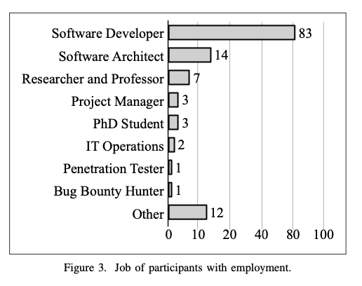
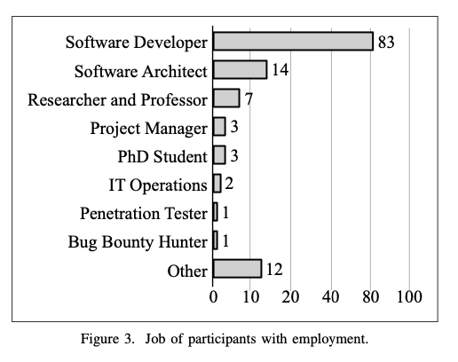

In general, as the author defindes, a software vulnerability is a design flaw or an implmentation bug that allows an attacker to cause harm to the stakeholders of an application. There are several ways to prevent this situations: code reviews, scripts to attack most common flaws, submit to a bug bounty program, penetrarion tests. The list is endless. One of the most vulnerability founded over the years is Improper Input Validation (IIV). Is dangerous because it doesn´t require a highly skilled programmer to found. This vuln is basically trying to bypass validation, if existing, or input a data that it was not supposed to be handled. For example make an exchange between accounts with a negative number. Instead of transfering money, you are inducing the server to send you money from the other account.
But why can´t developers, with years of experience, spot these type of vuln? Most of the researchs made until this article was published concluded that there is gap between development and secure development. There are misconcepts made, the developers rely to much to the frameworks underlying the applications and transfer the responsability to them. So, basically, development and secure development are very different. Altough they also concluded that code reviews helps to mitigate this issue. Well, in most of the Open-Source Projects. However, secure-driven code review isn't that effective. Aproximately 1% of vulnerabilities were in fact prevented - using Chromium Project as an examples - by secure-driven reviews.


In particular the participants commented that SQLi was easier to find because it is a common type of attack. In summary most of the developers who didn't catch vulnerabilties wrote after that either they lack attention to this type of detail, or they didn't have the knowledge to detect this type of bug. They also reported that they were looking to other types of things to review. "The reported reasons support developers’ belief in their lack of knowledge or experience to detect these vulnerabilities (13 mentions in total), which is in accordance with what SSEs claim [5]." Furthermore, many participants reported the lack of knowledge and practice as one of the main reasons for not identifying the vulnerability. To create a different approach, one may consider incorporating explicit security aspects in development activities, such as checklists for code review. Finally the best approach to this problem would be to create checklists for code reviewing. Such checklists should not be overwhelm to the reviewer. Instead it should help to create pratices for each developer to search for security issues.
But why can´t developers, with years of experience, spot these type of vuln? Most of the researchs made until this article was published concluded that there is gap between development and secure development. There are misconcepts made, the developers rely to much to the frameworks underlying the applications and transfer the responsability to them. So, basically, development and secure development are very different. Altough they also concluded that code reviews helps to mitigate this issue. Well, in most of the Open-Source Projects. However, secure-driven code review isn't that effective. Aproximately 1% of vulnerabilities were in fact prevented - using Chromium Project as an examples - by secure-driven reviews.
How the research was performed?
Basically there were two main questions, called Research Questions:- To what extent do developers detect IIV vulnerabilities during code review?
- What is the effect of the visibility of a traditional attack scenario for an IIV vulnerability on its detection during code review?
- What is the effect of warning developers who missed the IIV about the existence of a vulnerability (i.e. prompting) on the detection of an IIV?
The test
The tests performed were pretty simple. It was basically a GUI, like GitHub, and the volunteers had to evaluate the code. However no information was given prior to the volunteers related to the security vulnerability to not give any clues about the test. The next phase was ask questions about vulnerabilties knwoledge & pratices. Right after the system show that there is a vuln in the code - for those who didn´t found - and there is an optional choice to whether the user wants to go back or go on.What was show to the developers?
There were two types of vulnerabilites show to the developers: SQLi - SQL Injection and Improper Input Validation. Alongside these two a control bug was also showed to be the varibale of control. This bug was introduced to perform the evaluation on the interest of the participants. If the participants who didn't catch the vulnerability also didn't find the control bug it shows to the researches that this user wasn't engaged to the task.Results
A total of 472 people accessed the page, but only 146 wen beyond the page that were considered for the results. From these 80 received the SQLi vuln and 66 received the IVQI. The majority of the participants were software developers (57%) with multiple years of experience. In summary the results for the first review were as it is described below:- 66 found the vulnerability. This includes both SQLi and IVQI.
- 80 didn't found any the vulnerability

In particular the participants commented that SQLi was easier to find because it is a common type of attack. In summary most of the developers who didn't catch vulnerabilties wrote after that either they lack attention to this type of detail, or they didn't have the knowledge to detect this type of bug. They also reported that they were looking to other types of things to review. "The reported reasons support developers’ belief in their lack of knowledge or experience to detect these vulnerabilities (13 mentions in total), which is in accordance with what SSEs claim [5]." Furthermore, many participants reported the lack of knowledge and practice as one of the main reasons for not identifying the vulnerability. To create a different approach, one may consider incorporating explicit security aspects in development activities, such as checklists for code review. Finally the best approach to this problem would be to create checklists for code reviewing. Such checklists should not be overwhelm to the reviewer. Instead it should help to create pratices for each developer to search for security issues.